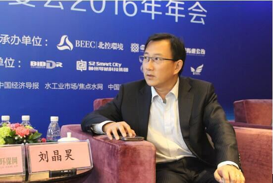
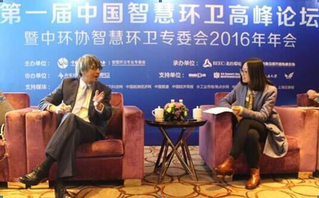

当前位置： 网站首页> 新闻资讯>行业资讯>厦门拟立法推行生活垃圾分类 乱扔垃圾者或影响个人信用
厦门拟立法推行生活垃圾分类 乱扔垃圾者或影响个人信用
:近日，《厦门经济特区生活垃圾分类管理办法(草案)》提交厦门市人大常委会审议。在垃圾分类管理办法中，北京青年报记者看到，该办法在生活垃圾分类投放与分类收集、分类运输与分类处置、监督管理和法律责任等方面制定相关规定。北青报记者从厦门市法制局、厦门市垃圾分类管理中心等处了解到，今后相关部门将推动垃圾袋二维码、建议取消再次分拣等措施。
垃圾分类管理办法提交人大
北青报记者了解到，《厦门经济特区生活垃圾分类管理办法(草案)》于6月28日提交厦门市人大常委会审议
在厦门市法制局官方网站上，北青报记者查询看到，该管理办法的草案征求意见稿于今年3月22日起在厦门市人民政府网站和厦门市法制局网站上公布，征求厦门市民和社会各界意见。
该管理办法由厦门市市政园林局起草，厦门市法制局组织修改。分为生活垃圾分类投放与分类收集、分类运输与分类处置、监督管理和法律责任等相关章节，对生活垃圾分类进行了相关规定。
对于生活垃圾的界定，办法将其分为可回收物、厨余垃圾、有害垃圾和其他垃圾四类。
对于保障实施垃圾分类的落实，办法中还规定了7项相关制度，包括监督员制度、举报奖励制度、曝光制度、信用监管制度、考核制度、监督员制度和信息管理制度。针对相关不依法分类的情形，办法规定，违法者的信息将被纳入我市社会信用信息共享平台，列入严重违法名单并向社会公示，通知所在单位。
对于保障实施垃圾分类的落实，办法中还规定了7项相关制度，包括监督员制度、举报奖励制度、曝光制度、信用监管制度、考核制度、监督员制度和信息管理制度。针对相关不依法分类的情形，办法规定，违法者的信息将被纳入我市社会信用信息共享平台，列入严重违法名单并向社会公示，通知所在单位。
拟推二维码垃圾袋
就厦门推出的生活垃圾分类管理办法草案具体细节等相关问题，北青报记者昨天咨询了厦门市市政园林局李姓工作人员，李女士建议自己从家中便开始进行垃圾分类，扔垃圾的时候就应该分类扔，“厨房里就可以放两个垃圾桶，一个扔厨余，一个扔其他，垃圾分类是每个人都应该做的，在家里的时候就应该把垃圾分开。”
李女士介绍，今后小区里面都会进行相应垃圾分类，逐步按照四类生活垃圾设置垃圾分类桶，会有四种颜色进行区分。同时，她介绍，在回收垃圾的时候也会进行分类，打造全流程的生活垃圾分类，“分类收集、分类转运和分类处理”。对于其他具体处罚等，工作人员称在该办法审议通过后，也会出台相应解释。
北青报记者还咨询了厦门市法制局法规处，就是否会有专人看守垃圾桶，以便监督垃圾分类投放的问题，工作人员答复称小区、社区、街道和居委会会聘请督导员，督导员会检查垃圾分类情况。
北青报记者提出怎样具体进行监督时，工作人员答复，今后会在小区里面给居民发放印有二维码的垃圾袋，“比如一周会发几个垃圾袋，扔垃圾时会通过这个二维码知道垃圾是谁扔的，有的小区已经发了。”
已建成厨余垃圾处理厂
就末端的垃圾处理相关问题，昨天，北青报记者电话联系了厦门市垃圾分类管理中心，工作人员称目前垃圾在处理前仍会进行再次分拣，但今后将逐步取消垃圾分拣，也是为了提升生活垃圾减量化，“提倡市民直接分好，我们直接处理就好了，这样可以垃圾减量。”
工作人员介绍，在四类垃圾中，可回收垃圾卖掉可以再利用，有害垃圾量较少会单独处理，而厨余垃圾又可以处理成肥料，最后剩下的其他垃圾量较少，处理起来也会更方便。
工作人员表示，目前厨余垃圾已经有能力进行处理，其他“线路”仍在进行规划，包括有害垃圾也正在建设单独的处理厂。
工作人员介绍，垃圾分类管理中心也在积极推动垃圾车购买、招投标以及垃圾桶摆放等相关规划。
而对于目前没有进行分类的垃圾，管理中心人员介绍会按照混合垃圾进行焚烧或填埋。
当前位置： 网站首页> 新闻资讯>行业资讯>件垃圾怎处理 微信预约上门收
件垃圾怎处理 微信预约上门收
记者了解到，深圳将建立全市统一的垃圾分类收运微信公众平台，7月底前上线运行面向小区物业的大件垃圾收运处理功能，未来或开放面向个人的大件垃圾有偿上门回收服务。
大件垃圾可预约上门回收
记者注意到，在新发布的生活垃圾分类设施配置标准中要求，每个住宅区(城中村)至少设置1个大件垃圾(年花年桔)投放点，居民把大件垃圾放到投放点，由物业统一打电话预约收运企业上门回收。
但事实情况却没那么简单，从家里把笨重的家具家电搬到小区投放点，本身就是个气力活儿，杨先生说，搬家公司也得要两三个人才能搬走大件家具，让物业的人来搬，人家也没这个责任。
深圳市城管局副巡视员杨雷表示，目前，深圳市生活垃圾分类中心正在开发全市统一的垃圾收运处理微信公众平台，7月底前上线运行大件垃圾收运处理微信服务功能。
“这个平台主要面向物业，物业今后可以微信预约收运企业上门回收大件垃圾”，杨雷呼吁，大件垃圾从居民家中到小区投放点的过程，物业公司可以尝试提供有偿搬运服务，互利双方。
垃圾分类中心工作人员介绍，这个平台将与各区共享信息链接，目前设想是对接物业和收运企业，未来还可向居民个人开放，提供微信预约大件垃圾付费上门回收的服务。分类收运处理企业向物业提供免费收运，每月至少巡回收运一次。
统一招标收运处理企业
记者了解到，在各类生活垃圾中，废旧织物的设施投放、回收和处理由专门企业运作，其他垃圾由市政部门负责，大件垃圾和玻金塑纸的情况比较“尴尬”。
深圳市生活垃圾分类中心副主任陈佳介绍，旧家具、废纸、金属，第一轮已经被废品收购者上门回收，进入到再生资源市场，收运企业上门收运的已经是不再具有回收利用价值的低价值废弃物，这就需要“政府兜底”，招标收运处理企业。
不过在考虑分类收运处理招标时，有个别区提出了“招标单价”的问题。陈佳说，以往政府在招标时，会和外包企业约定收运处理的垃圾量，“处理多少量的垃圾，可以参考焚烧厂、填埋场的处理成本，招标单价很容易计算”。
但现实是大件垃圾、玻金塑纸的处理完全由再生资源市场决定，已经不能再参考焚烧厂等市政处理设施定价。陈佳介绍，市城管局经过考虑，建议各区招标单价根据实际工作量产生的人力、运输等成本价格，来估算招标单价。
杨雷表示，为避免街道分散招标、收运和处理分开招标等情况，建议各区按分类类别统一招标相应收运处理企业，采用收运处理一体化模式。各区分类收运处理企业招标须于8月底前完成。
此外，深圳市、区还将建立分类收运处理分级监管机制。市生活垃圾分类中心采用第三方监管机制，定期在各区检查。各区城管部门也将建立监管机制，收运和处理交接使用联单登记留存，防止收运处理企业混合运输、混合处理。
建垃圾分类宣教基地
生活垃圾强制分类要落到实处，关键在于广泛发动社会参与，教市民怎样垃圾分类，怎样投放。目前，全市已印制超过200万份家庭分类投放指引，除罗湖、坪山区外，其余各区均已陆续发放中，盐田区率先完成有物业管理的住宅区全覆盖。到6月30日前，指引发放到户覆盖率将达到100%。
目前，深圳10个区(新区)正在规划建设具有自己辖区特色的垃圾分类宣传教育基地或者体验馆，作为辖区中小学校定点科普场所，宣传垃圾分类、垃圾处理、生态环保理念。目前宝安区已经率先建设完成，市生活垃圾分类中心正在制定宣教基地建设指引，各区宣教基地将在12月底前建成，并免费对外开放，供市民参观学习。
当前位置： 网站首页> 新闻资讯>行业资讯>智慧环卫结合城市管理 创造新的生产力
智慧环卫结合城市管理 创造新的生产力
编者按：近年来，杭州推动政府职能从研发管理向创新服务转变，促进了城乡公共资源的均衡配置；着力在优化结构、增强动力、化解矛盾、补齐短板上取得了突破性进展；形成了政府、企业、公众共治的环境治理体系。这种智慧环卫与城市管理相结合的方式，变成了一种新的生产力，不但美化了环境，还促进了社会的进步。
杭州在推行智慧环卫的过程中，坚持以科技为先导、以云平台为依托，将环卫智慧化推向了一个崭新的高度，同时在推动城市环境综合管理方面取得了可喜的成果。
杭州市萧山区在去年的G20峰会期间，全面加强环卫机械化、智能化的投入，把智慧环卫推向了新高度。萧山区不但把机扫车、洒水车、三位一体道路清洗车、小型机扫车、小型清洗车5种自动化道路清洗保洁车辆和能提高环卫工人机动性的电动车结合起来，减轻了环卫工人的劳动强度、降低了危险系数。同时，还引进了浙江联运知慧自主研发的“智慧环卫”车辆管理系统和“环卫云整体解决方案”，使得环卫工作的安全性能大大增强，信息数据反馈更加及时。
据了解，环卫云整体解决方案包含了先进的超声波油感器、移动管理终端、车载信息监控终端、智慧环卫车辆智能控制系统技术服务以及车载称重系统、人员定位系统，将环卫工作的人力资源管理与业务管理相结合，通过现代化的信息终端平台实现对环卫车辆、人员作业的监控和统计，对垃圾处置过程进行监管。这样能精确了解环卫作业的运行情况，规范工作人员的作业运行轨迹。高效的数据采集能够科学地量化每一个环卫单位的工作状况，从而进行数据分析，为辅助环卫管理与决策提供切实的数据支持。
杭州西湖区环卫服务中心的环卫车辆、运输车辆也安装了GPS系统。监控中心可对各种车辆的运行轨迹进行实时监管和跟踪。管理人员足不出户就可通过视频或者手持终端，直观地掌握所有环卫作业车辆的运行轨迹、作业情况、速度等信息。如垃圾车没有在指定的区域倾倒垃圾或者超出了作业范围，都将被定位遥感记录在案，便于直接对作业当事人进行监管与反馈，使环卫监管变得有序、高效和可控，实现杭州环卫管理工作的升级。
浙江联运知慧的相关人士认为，智慧环卫作为一种新的生产力，不但把智慧垃圾分类、再生资源回收、环卫作业监管等工作有条有理地串联起来，还有利于将整个环卫体系的工作纳入到市场化的运作机制中，推进环卫行业的健康发展。
当前位置： 网站首页> 新闻资讯>行业资讯>“智慧环卫”将重塑环卫印象 颠覆环卫监管方式
“智慧环卫”将重塑环卫印象 颠覆环卫监管方式
从过去“一个扫把一把锹，手推小车跑断肠”到如今一些道路清扫车、垃圾清运车等机械化设备的加入，环卫工作其实尚未与“脏、乱、杂以及科技程度低”等描述脱离。“人多、面广、事杂”更是环卫管理工作最显著的特点。环卫日常管理运行中的难题解决不了，环卫管理就只能是低水平运行。如何配置众多的环卫资源，让它们优化组合，一直是环卫部门关注的焦点。
在我国，城市垃圾从产生到处置的全过程管理中，收集和运输的费用约占总费用的60%—80%。这表明，如果通过科学管理，将收运系统进行合理优化将对环卫产业乃至整个社会产生重大意义。传统的垃圾收运模式已难以满足适合城市发展以及城市建设管理的需求，在这种大背景下，一种新的理念应运而生——智慧环卫。
智慧环卫是智慧城市一个重要的组成部分，是用一种更为智慧的方法，通过新一代信息技术来改变政府、公众和企业以及企业内各部门之间的交互方式，提高交互效率，使废弃物的收集、运输、加工和利用全过程的成本更低、效益更高，同时实现全过程的可视、可控、可互动和可循环。智慧环卫将在促进城乡环卫一体化、破解垃圾围城、促使垃圾分类等方面发挥着重要作用。借助智慧环卫的信息服务产品，可以让环卫作业和定额作业质量更符合科学标准，同时也能让固体废弃物的专业收运路线更优化。智慧环卫既是对传统城市环卫作业模式的创新，又是对以往环卫监管方式的颠覆。
智慧环卫是软硬一体的环卫精细化管理新模式。与目前正在推行的数字环卫相比，智慧环卫有以下几点优势：一是智慧环卫在数字环卫的基础上，进一步利用了传感技术和3S技术，对城市环卫运行状态进行了自动、实时、全面透彻的感知;二是智慧环卫强调构建开放、整合、协同的环卫信息化体系，发挥了城市环卫信息化的整体效能;三是智慧环卫通过3G网络、移动技术，实现了环卫管理无所不在的互联和随时随地的智能服务，将环卫监管从web端向移动端扩展;四是智慧环卫通过政府、市场、社会各方力量的共同参与，塑造了市民参与、市民体验的新模式，开拓了全民环卫、环卫共治的大局面。
毋庸置疑，智慧环卫的出现将环卫工作模式由智能化升级为智慧化，使城市环卫管理工作更专业、更高效、更智慧。智慧环卫致力于用科技打造城市环卫工作管理新模式，通过及时、高效、充分的信息获取，规范、有效、科学的信息利用，实现了城市环卫工作的可视化监控、智能化决策和精细化管理，增强了管理者处理突发事件的能力。智慧环卫利用物联网、移动互联网及大数据等相关技术，对环卫管理涉及的各类环卫设施、环卫作业车辆、环卫作业人员、环卫管理车辆和环卫管理人员进行全过程实时监管，通过为各级环卫管理元素配备不同的感知设备、智能终端，形成了一个信息互联互通的物联网络;智慧环卫通过对相关环卫元素指标进行有效梳理，将分散在各处的环卫数据形成数据资源，并利用大数据处理技术对数据资源进行分析、挖掘、应用和管理，有助于环卫管理者进行科学的决策。
近年来，全国智慧城市建设的进程中，各地智慧环卫建设取得显著的成效。然而，从整体上看，大多数城市智慧环卫建设仍处于探索阶段，还存在走一步算一步、缺乏整体规划、环卫综合监管技术手段落后、缺少通用信息化管理平台以及缺乏跨地区、跨层级信息共享平台等问题。因此，智慧环卫必须建立在开放的互联网思维上，通过构建一个“共有、共享、共治”的智慧云平台，形成一种“共赢”和“多赢”的思维。首先，需要科学地做好智慧环卫顶层设计。智慧环卫行业需要与时俱进地强化顶层设计与规范，统筹建设，整体推动智慧环卫的建设进程，同时需要有明确的智慧环卫管理指标体系，以指导和评估各地智慧环卫的建设。其次，需要借助“互联网+”技术驱动智慧环卫转型升级。借助云计算、大数据技术引领智慧环卫系统建设，创新智慧环卫功能，使物联网、大数据及云计算等互联信息技术得到更广泛的应用，建成覆盖范围广、技术先进、通用性强、智慧化程度高的智慧环卫系统。最后，需要加强智慧环卫系统建设。完善环卫作业车辆实时监控系统，实现实时远程管理;完善环卫作业质量监督监控系统，实现动态控制指挥;完善环卫员工内部动态管理系统，提升工作效率;完善环卫事件公众参与反馈系统，提升服务水平;完善环卫作业监督考核系统，实现长效规范管理;等等。
当前位置： 网站首页> 新闻资讯>行业资讯>传统模式难以满足发展需要 环卫产业需要“智慧”起来
传统模式难以满足发展需要 环卫产业需要“智慧”起来
互联网时代，互联网渗透在我们生活的每个角落。随着互联网+的不断深入，互联网与行业发展日益融合，正逐渐改变着传统产业模式。未来互联网+环卫的智慧环卫模式将成为环卫行业发展模式。在第一届中国智慧环卫高峰论坛上，住建部环境卫生工程技术研究中心副主任刘晶昊、北控环境投资(中国)有限公司总监黄小山与北极星节能环保网就智慧环卫的发展进行了深入的探讨与交流。

住建部环境卫生工程技术研究中心副主任刘晶昊
一、传统的垃圾收运模式难以满足需要
近年来，国家政策的倾斜加之目前垃圾增量现状，都催化了环卫行业的发展，使得垃圾处理市场进一步增容。以生活垃圾来说，每年我国设市产生量大约在1.8亿吨，县城产生量约6000万吨，而农村则在1.1亿吨左右，总数大约可以达到3.6亿吨。一吨垃圾从前端收集、运输到后期处理的费用约为300-500元，由此推算出，我国生活垃圾的处理市场能达到1000亿每年。
虽然我国垃圾处理市场空间巨大，但是传统的垃圾收运模式存在着诸多问题束缚了垃圾处理产业的发展。目前在我国城市生活垃圾管理系统建设中，长期以来研究重点大多放在垃圾的末端处理处置上，如垃圾填埋、垃圾焚烧等，而对于垃圾收运系统方面的研究相对滞后，缺乏系统的规划管理体系、先进的技术手段等;并且，在实际操作过程中，由于基本是参照国外发达国家的一些经验，较少结合我国城市的特点，使得前端收集容器、垃圾转运站选址较为盲目，建设规模不匹配，从而导致投资效益低下，运转能力不足，经济性较差;环卫工作存在着“点多、线长、面广”的特点，传统的管理模式只能将工作人员分区划片，难免存在管理盲区，造成了人力、物力等资源的浪费。
刘晶昊表示，传统垃圾收运模式中存在着不太合理的方面，造成了资源的浪费。产业的发展亟需一种新的模式出现。环卫市场需要向信息化管理、精细化作业、一体化经营和城乡一体化方向发展。
二、垃圾分类是实现智慧环卫的良好开端
在传统的垃圾收运模式中，最受关注的是垃圾分类。垃圾分类是垃圾处理最重要的前端，很大程度上决定着垃圾处理的效果。虽然垃圾分类已经在我国推行多年，但一直处于推而不进无法落到实处的窘境。究其原因有以下三点：
第一、中国的垃圾分类其实还没有严格的界定，起码还没有法定标准或者规范出来。
第二、除了专业人士，目前中国的普通人士基本上只能凭生活经验来区分垃圾的类别，从而导致干湿不分，可回收与不可回收不分。
第三、光靠设计垃圾桶，是解决不了垃圾分类的。要加强宣传教育，从观念上树立垃圾分类的意识。
对于垃圾分类，北控环境投资(中国)有限公司总监黄小山对北极星节能环保网坦言，垃圾分类是每个人的事。在我国之所以对垃圾焚烧发电存在争议，是因为存在有害气体的排放，而如果将垃圾分类做好，干湿垃圾分开并得到进一步处理之后再送到垃圾焚烧厂，又是另外一种结果。政府的工作是分类运输、分类收集、分类处理，而这一切完全取决于老百姓的分类投放。日本、韩国、欧美国家的垃圾分类都是如此。垃圾分类是实现智慧环卫的良好开端，智慧环卫是未来环卫行业发展趋势!

左为北控环境投资(中国)有限公司总监黄小山
三、智慧环卫是未来环卫行业发展的趋势
互联网时代，互联网渗透在我们生活的每个角落。随着互联网+的不断深入，互联网与行业发展日益融合，正逐渐改变着传统产业模式。“互联网+”就是“互联网+各个传统行业”，但这并不是简单的两者相加，而是利用信息通信技术以及互联网平台，让互联网与传统行业进行深度融合，创造新的发展生态。
自从李克强总理在2015年两会期间的政府工作报告中提出“互联网+”行动计划后，“互联网+”成为国家战略，也就同时意味着互联网行业的发展已经是关系到国家的经济命脉的重要一环。互联网+环卫的智慧环卫模式既适应了产业发展的需求也顺应了国家发展战略，促进了环卫产业信息化、智能化发展。
智慧环卫，是依托物联网技术与移动互联网技术，对环卫管理所涉及到的人、车、物、事进行全过程实时管理，合理设计规划环卫管理模式，提升环卫作业质量，降低环卫运营成本，用数字评估和推动垃圾分类管理实效。智慧环卫所有服务部署在智慧城市管理云端，对接智慧城市网络，以云服务方式随时为管理者及作业人员提供所需的服务。
刘晶昊提到，互联网与环卫是相辅相成、密不可分的。智慧环卫前期发展更倾向于环卫+互联网，以环卫为主题，互联网是辅助的手段，不断促进环卫事业的发展。
最后刘晶昊谈到智慧环卫的发展趋势时表示，未来环卫服务将朝着手段信息化，装备智能化的方向发展，智慧环卫是环卫行业发展的趋势。目前已经有先行者像北京环卫集团、桑德环卫、杭州锦江、盈创回收等企业布局智慧环卫市场。随着智慧环卫的不断推进，会有更多的环保企业进入智慧环卫市场。未来智慧环卫会发展的越来越好!
当前位置： 网站首页> 新闻资讯>行业资讯>从垃圾处理看各国变废为宝的智慧
从垃圾处理看各国变废为宝的智慧
走在世博园里，记者发现各国以及各大城市对垃圾处理的重视超乎想象。上述各项措施不仅使东京都的垃圾生成总量逐年减少，每年因无法处理而填埋的垃圾量也大幅下降。
世博网7月26日消息： 走在世博园里，记者发现各国以及各大城市对垃圾处理的重视超乎想象。在许多国家的展馆和最佳城市实践区，有关人员详细介绍了本国和城市垃圾处理的科学高效方式，充分体现了当今人们对环保、资源和可持续发展的重视。如何不让垃圾“围城”，最大限度地把垃圾变废为宝，这其中大有文章。
西班牙：小垃圾也有大用途
走进上海世博会马德里案例馆的三层，人们会看到一个巨大的流程图，清晰地展示了马德里复杂而先进的垃圾分类收集、运输、处理和再生能源开发利用等综合基础设施及服务。
马德里市区面积606平方公里，人口约327万。2009年，马德里市家庭共产生垃圾近111万吨，企业产生的垃圾近30万吨。市政府在瓦尔德明戈麦斯科技园建有一座功能强大的垃圾综合处理厂，下设有机垃圾堆肥厂、生物沼气生产厂、塑料处理厂、废渣倾倒厂等8种垃圾处理场所.
处理厂先将收集来的垃圾分为不可再利用和可再利用两种。不可再利用的垃圾将废渣分离出来后，剩余垃圾将进入垃圾倾倒厂用于产生沼气，废渣可用于产生电能。
可再利用的垃圾就用处更大了：经过分离和分类，产生可回收材料和有机物质，有机物质经发酵催熟后可成为肥料供给农民，也可产生沼气和用于发电。塑料、金属、玻璃和纸张等可回收材料则供给生产商循环使用。
可别小看这些垃圾，通过科学有效的垃圾分类和处理，马德里市每年能够回收12万吨的纸张或纸板、5.3万多吨各类塑料和金属以及3.8万吨玻璃，并能从垃圾中提取7万吨的有机肥料。垃圾，在马德里人手里，真成了宝贝。
日本：细节决定成败
自上世纪90年代起，日本东京都23个区的人口在逐年增加，可城市产生的垃圾和被最终填埋处理的垃圾却逐年减少。那么，东京都的人口没有减少，垃圾为何会越来越少呢?
首先是用法律约束，从源头控制垃圾的生成量。日本有较为完善的构建循环型社会的法律体系。在各种法律约束下，日本国民均依法进行“3R”实践，从源头上有效减少了垃圾的生成量。
“3R”是减少、再利用、循环3个英文单词的首字母，核心意思是尽量不购买和使用容易产生大量垃圾的物品，尽可能延长物品的使用寿命，不轻易抛弃，尽可能使物品循环再利用。与此同时，东京都还实行严格的定时分类投放垃圾的制度，有效控制垃圾的二次污染。
正因如此，东京都23个区的垃圾量从1989年历史最高水平时的近500万吨减少到2008年的306万吨，减幅超过38%。目前，东京都人均日产垃圾仅为1公斤。
其次是注重资源回收，减少垃圾总量。比如，“清扫工厂”不仅负责辖区内的垃圾收集搬运，可燃垃圾到了这里还会经过高温焚烧，产生的煤气用于发电，产生的热量用于供热，炉渣灰和灰尘送往“灰溶融设施”制作建材，铁铝等金属进行回收，焚烧垃圾产生的有害气体经处理后实现无毒排放。经“清扫工厂”焚烧后，可燃垃圾的体积仅为原来的二十分之一。
上述各项措施不仅使东京都的垃圾生成总量逐年减少，每年因无法处理而填埋的垃圾量也大幅下降。据统计，在历史高峰时的1989年，垃圾填埋量近250万吨，而到2008年时已减至不足50万吨，填埋负担大大减轻。
德国：少花钱办大事
在城市垃圾处理方面，德国一向走在世界前列。除了其著名的垃圾分类系统外，德国在垃圾处理机构的运营方式上也有着先进经验。
以首都柏林为例，柏林市政府下属的城市清洁公司负责解决整个城市的垃圾问题。该公司共有15个垃圾回收站，再加上1个垃圾转运分发中心、1个垃圾处理中心和4个分类处理厂，就构成了柏林的垃圾处理体系。
柏林是德国第一大城市，拥有340万人口。城市清洁公司每年处理柏林家庭和企业产生的近100万吨垃圾，清扫总面积达136平方公里的街道。该公司任务虽重，却能在德国同类企业中做到效益最好、成本最低。
这得益于柏林城市清洁公司2001年启动的“效率提升计划”。该计划以3年为一期，截至2009年第三期结束时，通过运营体制改革、优化人员配置、加强成本核算等措施，共节省开支1.6亿欧元，裁减了近2500名员工。预计到2012年第四期结束时，其运营成本还将大幅减少。
该公司新闻发言人克勒克纳说：“在大城市，垃圾处理是一个令人棘手的大问题。探索新的垃圾处理方法意义重大。”他还专门提到了以“城市，让生活更美好”为主题的上海世博会，并指出：“这句口号同样适用于我们的这个垃圾管理机构。我们运作得更有效率，城市居民的生活自然就会更加美好。”
当前位置： 网站首页> 新闻资讯>行业资讯>城市垃圾治理的中国探索
城市垃圾治理的中国探索
近期召开的中央城市工作会议提出要统筹生产、生活、生态三大布局，提高城市发展的宜居性，同时指出垃圾处理等基础设施要按照绿色循环低碳的理念进行规划建设。
“垃圾围城”是目前中国大城市不可回避的城市病。2013年全国设市城市生活垃圾清运量1.73亿吨，如果堆在一起，可以堆出500多座百层高楼。广州产生的生活垃圾两天不处理就能堆到香港；北京每天产生的垃圾，如果用2.5吨的卡车装载，能从天安门一直排到河北廊坊。
中国城镇化发展加速，垃圾围城怎么破？民众焦虑如何化解？中国进行了一系列探索。
1、垃圾焚烧打开循环经济之门
当前，中国城市都面临着人多地少的问题，在业内看来，对于人口密集的城市，垃圾焚烧是重要的选择。世界上主要发达国家都将焚烧作为垃圾处理的首选，欧洲、美国、日本等发达国家和地区70%—90%的生活垃圾均焚烧处理，通过焚烧，垃圾可以减容90%，减量80%。
在中国，这几年，垃圾焚烧发电项目建设速度在加快，规模也在不断加大。中国循环经济协会发电分会的数据显示，2015年全国投产新建垃圾焚烧发电厂17座，建成投产后全年新增处理量接近635万吨。
2015年11月18日，北京市朝阳高安屯生活垃圾综合处理厂焚烧中心1号炉顺利实现首次点火，作为生活垃圾处理的二期工程，该厂日处理规模能达到1800吨，首次把市民的餐厨垃圾、可回收垃圾和其他垃圾进行精细化处理，实现无害化填埋或产生肥料。
同样位于这座产业园的还有高安屯垃圾焚烧发电厂，它既是北京市第一座现代化大型生活垃圾焚烧项目，也是目前亚洲单线处理规模最大的处理厂。焚烧发电厂与周边的垃圾填埋场、餐厨垃圾处理厂等构成循环经济产业园。记者采访该厂时发现，垃圾在这里经过处理后，不仅可以用来发电，还能供暖、用作有机肥。高安屯垃圾焚烧发电厂生产运营总监告诉记者，为了保证二噁英的排放达标，进厂的垃圾要经过5到7天的堆酵脱水才能入炉，这样可以提高入炉垃圾的热值，强化燃烧。
焚烧产生的烟气并不是直接排入大气，还要经过脱氮、脱酸、除尘、去除重金属和二噁英。烟气的排放数据可以在北京市朝阳循环经济产业园的网站上进行查询，有日数据、月数据和季数据三类。因为二噁英很难实现在线监测，所以在季数据中分列着2015年的二噁英排放情况。以最新公布的抽测数据为例，1号炉和2号炉的烟气二噁英排放分别为0.014和0.015纳克每立方米，远低于欧盟2000的0.1纳克每立方米的标准。
焚烧产生的热量通过余热锅炉，把水加热成中温中压蒸汽，送入汽轮发电机组发电，每年发电量可达2亿千瓦时以上，相当于每年节约7万吨标准煤。每年10余万吨的炉渣可以制成建筑材料，垃圾处理过程中会产生渗滤液等垃圾水，经过反渗透过滤等多个环节，变成无公害的中水。
像高安屯垃圾焚烧发电的循环经济模式在业内已经渐成标配。比如光大国际的“静脉产业园”模式，在江苏吴中的项目中，围绕“固废产业化”目标，先后建成了垃圾焚烧发电、沼气发电、餐厨垃圾综合利用等12个循环经济项目，实现了产业园内的集约利用与阶梯利用，还实现了基础设施和信息的共享。
2、生态共融化解邻避效应
垃圾焚烧可以变废为宝，但垃圾焚烧厂的落地却不是件容易的事情。
北京、上海、杭州、广东、江苏等省市都遭遇过落地难题，在公众的认知里，垃圾焚烧厂排放的烟气特别是二噁英对健康会造成严重危害，垃圾臭味难耐。“垃圾处理厂可以建，但就是不能建在我们家附近”，“邻避效应”时有发生。
在海南三亚的凤凰镇，光大环保能源（三亚）有限公司总经理王森林就遇到过这样的问题。由于近几年三亚垃圾的急剧增长，2013年，在凤凰镇建垃圾焚烧发电厂的消息一传出便遭到了附近水蛟村村民的反对。王森林索性就住进了村里，而且一住差不多就是40天，每家每户去做工作，为村民们讲解项目使用的技术和环保监督的手段，为村民发放宣传手册，甚至组织村民到光大已经运行的常州、苏州的焚烧发电厂实地参观。就这样，村民的疑虑消解了，项目终于得以开工建设。
项目开工及建成后，村民还时不时去工厂参观。公司把职工宿舍也修到了厂区里，村民们看了以后就更放心了。为了满足公众的知情权，公司与三亚市环保局、园林环卫局合作实现在线监测联网，开通实时在线查询功能，同时还通过电子屏将重要环保参数对外公布。
2014年，光大还帮助杭州市政府化解了九峰垃圾焚烧发电项目的邻避危机。2014年4月，杭州市九峰垃圾项目规划选址公示后曾遇到周围居民的反对，后引入光大国际负责项目建设运营管理，政府组织项目附近居民对光大的其他垃圾焚烧项目进行考察。通过4000余人的考察，公众对光大国际的技术、理念、管理表示认可，颠覆了垃圾处理项目“污染大、环境差”的旧观念，使项目在2015年4月如期开工建设。
光大国际副总经理蔡曙光曾表示，与社会共融的生态理念是化解邻避冲突的有效途径。
据了解，光大国际从事生活垃圾无公害化处理十余年，在信息公开上一直努力。2006年，光大国际就率先推行排放指标与项目当地环保部门在线联网，主动接受当地政府部门及公众监督。2015年又率先在国内向社会和公众公开披露垃圾发电项目各项环评指标，自觉接受社会和公众监督。
单有信息公开还不够，相应的生态补偿也不可或缺。在南京江南静脉产业园，每处理一吨非本区域的生活垃圾，受益区域的财政要补贴50元，用于产业园内生产设施的技术升级、环保设施的建设及生态恢复。对于杭州九峰项目，杭州市政府按照每吨垃圾75元的价格补贴给项目所在地政府部门，用于改善当地居民的生活质量。
3、垃圾减量提高资源利用率
垃圾处理是一个链条式的行为，垃圾减量（Reduce）、再利用（Reuse）、回收（Recycle）的“3R”原则被不少国家奉为垃圾处理的核心理念。
垃圾减量实质是提高垃圾的资源化利用率，最终减少填埋量。无论是焚烧还是生物处理后的垃圾，最终还是会余留下不能再利用的剩余物，这部分物质还是要被填埋。垃圾减量也是多级的过程，可以从产品的设计和生产阶段就开始充分考虑，尽量减少废弃物的产生；可以做好垃圾分类，把可再生、利用的垃圾分离出来，减少垃圾清运量。
早在2000年，北京、上海、南京、杭州、桂林、广州、深圳、厦门被确定为全国8个垃圾分类收集试点城市。经过15年的努力，垃圾分类的理念在中小城市也为大家所熟悉。记者在北京麦子店街道某小区看到70多岁的老人，按照社区发放的垃圾分类指导给家里的垃圾做分类；在呼家楼街道的幼儿园课堂上看到，三四岁的孩子在老师的指导下，向垃圾箱里正确投递牛奶盒。
有数据显示，截至2013年底，上海市垃圾分类场所共覆盖万余个，覆盖居民205万户。广州于2014年1月在6个社区开展生活垃圾计量收费试点工作，分别采取按袋计量和按桶计量方式开展，并开始全面推广垃圾“定时定点”分类投放模式。
南京在2014年初首次将垃圾分类推向市场，由企业运作，一年后，“垃圾换物”的模式已覆盖40个试点小区30%的居民。在南京的尧化街道，试点垃圾分类的小区设有厨余垃圾投放点，每天早上6时半到9时半，市民可以通过厨余垃圾的投放获得积分，可以用来兑换蔬菜以及各种日用品。
中国在城市垃圾治理方面进行了很多探索，但是垃圾减量不是一蹴而就的事情，要经历一个漫长的过程。
垃圾处理可借鉴的经验
中国台湾地区通过垃圾随袋收费实现了垃圾减量，人均每天垃圾产生量从上世纪80年代末的1.14公斤减至如今不到0.35公斤，远低于国际人均日垃圾清运量1公斤的水平，这一切得益于台湾社会坚持“源头减量、再利用——回收堆肥——焚烧——填埋”的处理模式和步骤，把源头的减量作为基础性工作。在台北街头，记者曾刻意去找过垃圾桶，由于“垃圾不落地”的导向，数公里之内确实难以找到一个。垃圾减量的成功，使原先台湾规划的36座垃圾焚化炉，最终只建造24座，有的现在还面临缺乏垃圾可烧的状况。
在日本，垃圾分类是个精细活儿。记者翻看仙台发放给公众的《2015年资源与垃圾的分类方法与排放方法》，看到首页写着不同种类垃圾的收集日，如罐、瓶、塑料瓶只在周四收，家庭垃圾只在周二、周五收。在具体的垃圾处理上也有详细的要求，比如牛奶盒要洗净、展开、晾干并用绳子捆成十字形；饮料瓶罐要取下盖子和标签作为另外的垃圾种类处理，瓶罐除了洗净外，瓶子还要压扁，而罐不能压扁；厨房的垃圾要滤干水分，庭院的树枝要截短至长度80厘米，周长30厘米以内并捆好。如果有大件垃圾，如沙发、电器，则需要先向大件垃圾受理中心申请，然后到政府或者便利店购买“大件垃圾处理手续费缴纳票”，并将票贴在大件垃圾醒目的位置上，按照被告知的收集日，8时30分前要放到自家门前。
德国垃圾回收坚持生产者责任制的原则和行业自律的原则，“绿点”商标许可证对限制和减少废旧包装材料起着重要的作用。每个包装的生产商、运输商、代理商和销售批发商等都得向“绿点”公司支付相应的许可证费，方可获得在其产品上标注“绿点”标志的权利。利用企业交纳的“绿点”费用，DSD公司负责包装垃圾的收集、清理、分拣和循环利用。“绿点”商标许可证收费标准按包装的材料、重量和数量计算。居民将印有“绿点”标志的废品丢进专用垃圾箱可享受免费清运，目前，德国约90%以上的商品包装上都印有“绿点”标志。